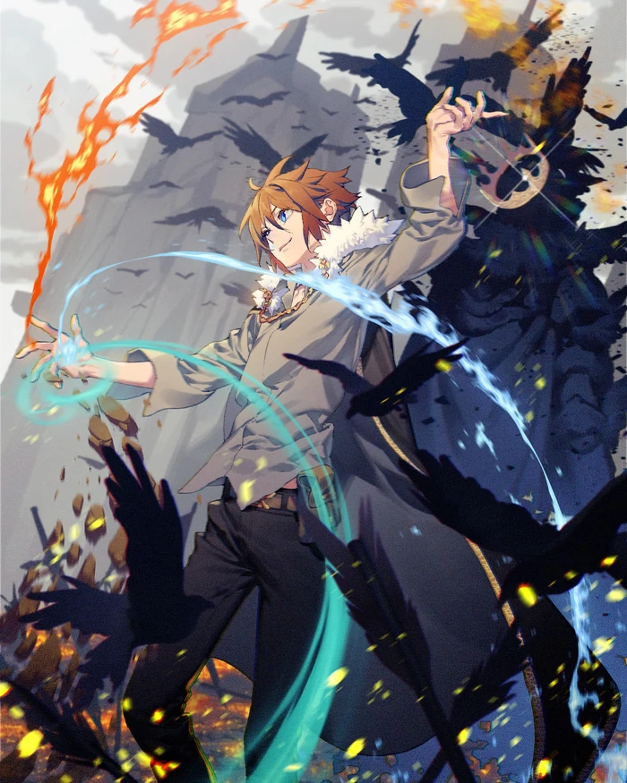

TBATE Novel
The Beginning After The End is an epic fantasy story written by TurtleMe. The novel is on Tapas where it is updated weekly. It is currently available in English. There is also a webcomic adaptation which can also be found on Tapas.
The Beginning After The End follows the life of the late King Grey after his untimely and mysterious death. Reborn as Arthur Leywin, he seeks to correct his past mistakes in the vibrant new continent of Dicathen, a world of magic and fantastical creatures. Equipped with the knowledge of a powerful king in his mid-thirties, Arthur navigates his new life as the magic-wielding child of two retired adventurers and gains purpose through each of his experiences—something he lacked in his previous life. When a kind dragon sacrifices her life to protect him, Arthur resolves to live a sincere, kind, and courageous life with those he loves. With the help of a lost elf princess and the Elven Kingdom of Elenoir, Arthur begins his long journey to find his true place in the world.
As the years pass, Arthur becomes more and more comfortable in this world, positioning himself as a young but respected figure. However, deja-vu strikes as a war brews between Dicathen and the Vritra, a clan of banished deities now ruling over a faraway continent. Arthur must rise as a leader, despite his fear of becoming the war-hardened monster he once was in his past life. As the war rages on, Arthur discovers that he was not reborn to this world by chance… nor was he the only one.
The Beginning After The End Novel |
|
|---|---|
|  | |
| Information | |
| Author | TurtleMe |
| Genre | Action, Adventure, Fantasy, Martial Arts, Mature, Romance, School Life, Supernatural |
| Original Run | January 18, 2017 |
| Publisher | Tapas |
| Volumes | 9 (published) 10 (ongoing) |
| Chapters | 411 |
| Status | Ongoing |